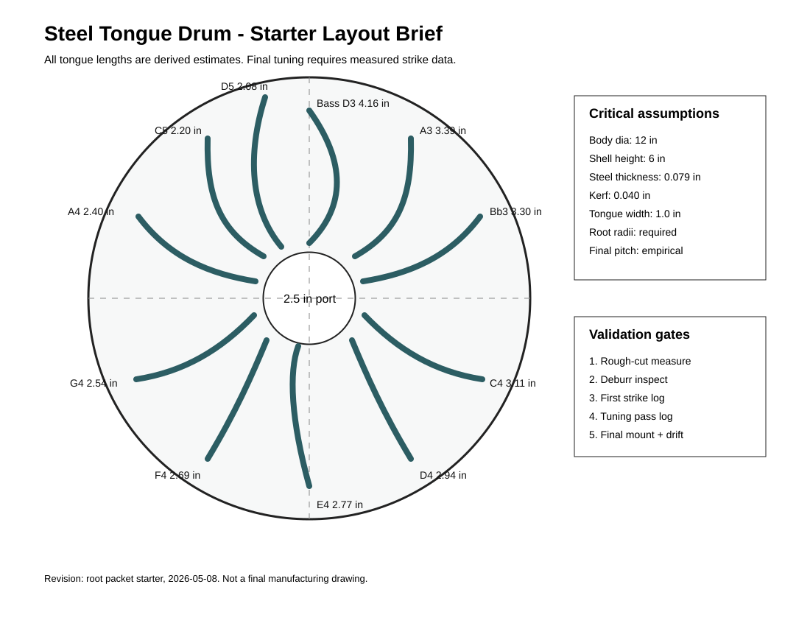

Planning Authority
steel-tongue-drum-design-table.xlsx, family-spec.csv, and validation.csv define the first prototype and measurement loop.
Root-mode packet for a 12 inch steel tongue drum prototype. The workbook gives first-pass geometry; the instrument is not tuned or build-ready until the real steel shell is cut, struck, trimmed, mounted, finished, and drift-checked.

This explorer is a review surface for issue #1. It keeps the useful packet shape visible while separating workbook predictions from measured prototype evidence.
The risk is not whether the packet is tidy; it is whether slot geometry, heat/stress, and tuning behavior have been proven on real steel. These gates keep that line bright.
Record actual steel grade, thickness at multiple points, and forming or weld notes before trusting the workbook constant.
Cut a process coupon to capture kerf, taper, burrs, heat affected zone, warp, and slot-root radius before the full tongue field.
Measure every tongue before trimming with the same support, mallet, strike point, microphone distance, and environment notes.
Log cents error and trim history through rough-cut, deburr, tuning, final mount, finish cure, and 24-72 hour drift check.